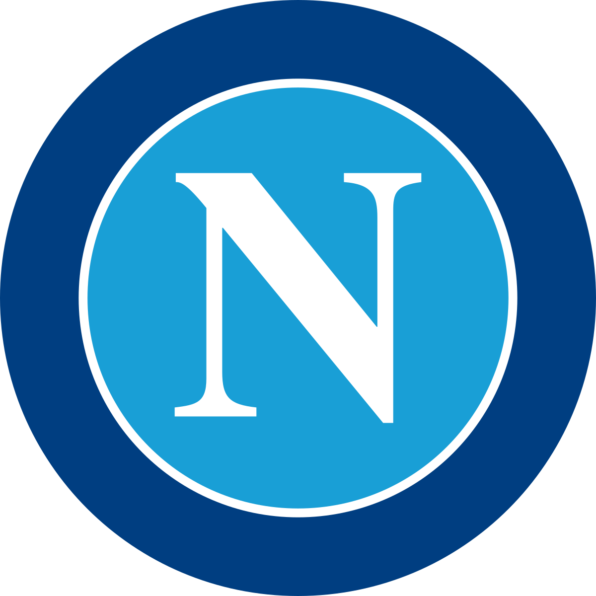

Neste segemento vou introduzir o meu primeiro Hobby favorito que pelo titulo podemos ver que é futebol e os meus 3 clubes preferidos no momento.
3 - Brighton & Hove Albion
Este equipa joga na 1º divisão inglesa onde se encontram em 8 lugar na classifição ao fim de 31 jogos, -3 jogos que maior parte do competidores.
Este equipa está recheada de talentos de todas as partes do mundo, por exemplo, Mac Allister que é Médio Atacante, Kaoru Mitoma que é Extremo esquerdo, Evan Ferguson que é ponta de lança onde tem apenas 18 anos de idade e muitos mais,
e são dirigidos pelo treinador Roberto De Zerbi. Para além disto o Brighotn tem uma equipa comprada pelo seu CEO, a equipa Union Saint-Gilloise que joga na Bélgica.
2 - Napoli
Napoli é uma equipa da 1ª divisão da itália onde neste momento se encontram no 1º lugar ao fim de 33 jogos com 80 pontos, vantagem de 16 pontos para o segundo. Com este 1ª lugar 7
o Napoli a fim de 33 anos consegue vencer o Scudetto que é o troféu para o vencedor da liga, os jogadores que mais contribuiram para isto foram, Kvaratshelia jogador Georgiano que joga no extremo esquerdo, Osimhen jogadro nigeriano que joga a ponta de lança e por fim
Kim Min-Jae jogador sul-coreano que joga como central, liderados pelo treinador Luciano Spalletti.

1 - Benfica
O Benfica é a minha equipa preferida desde que nasci, o meu pai é benfiquista por isso fui forçado a ser benfiquista, mas continuando, o Benfica joga na 1ª divisão portuguesa e encontram-se no 1º lugar ao fim de 30 jogos
com uma diferença de 4 pontos para o segundo lugar, se o Benfica ganhar a liga vai faze-lo depois de 3 anos sem a ganhar o jogadores que estam a contribuir para este 1º lugar são, Gonçalo Ramos jogador portugues que joga a ponta de lança, João Mário
jogador portugues que joga a medio esquerdo ou direito e Frederik Aursnes jogador norueges que pode jogador em qualquer lugar no meio campo, liderados pelo treinador Roger Schmidt.